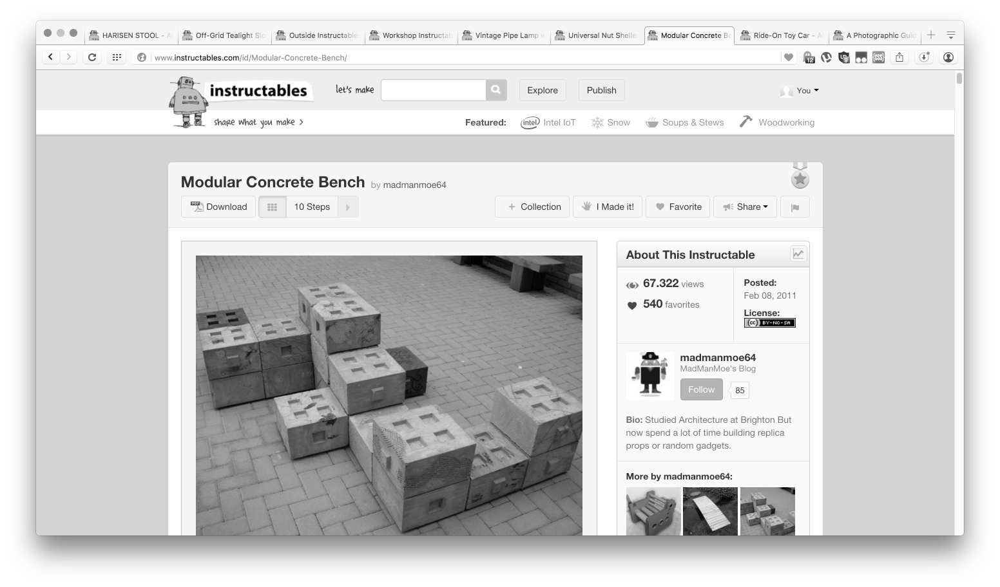
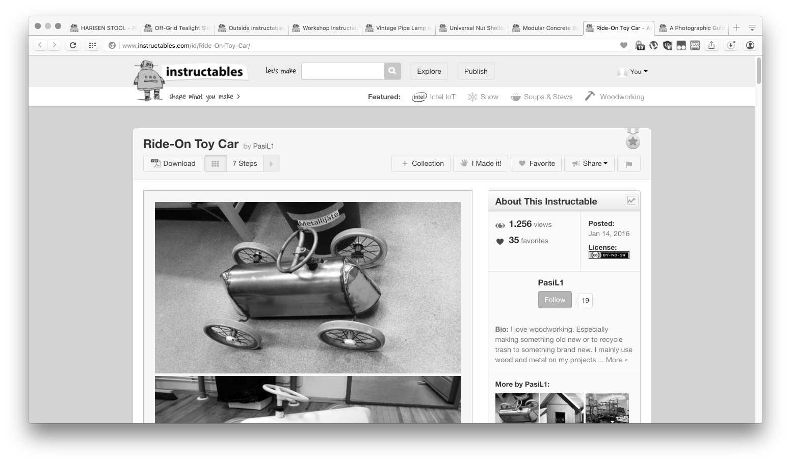
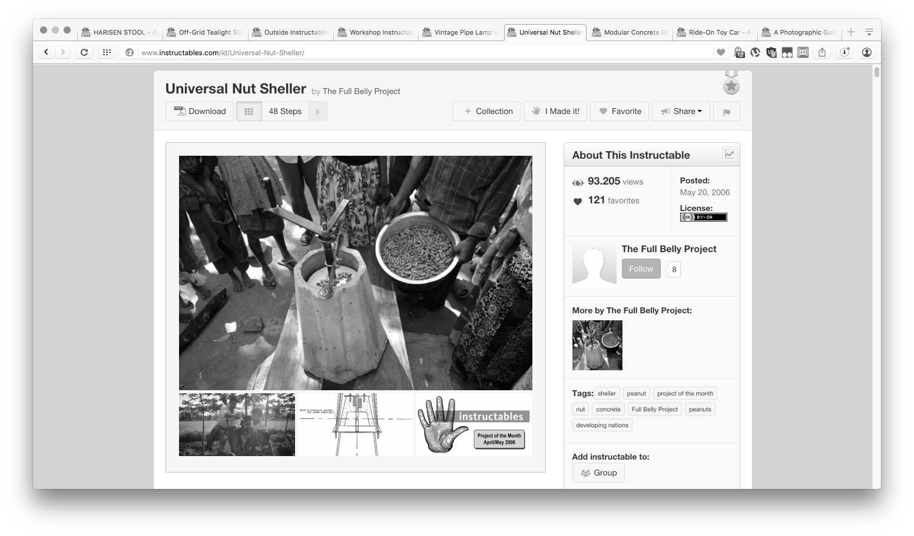
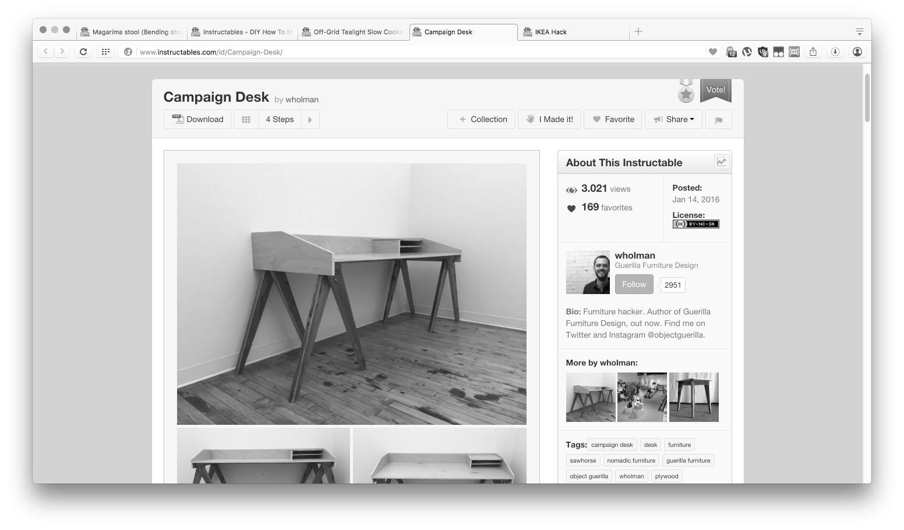
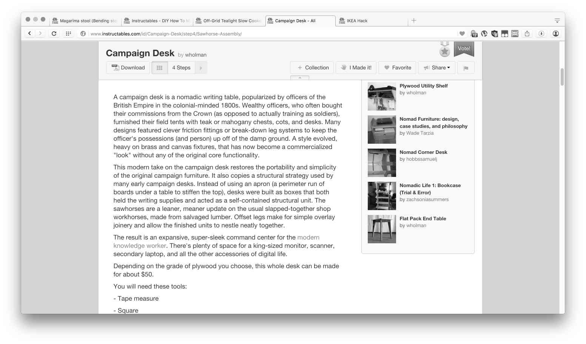
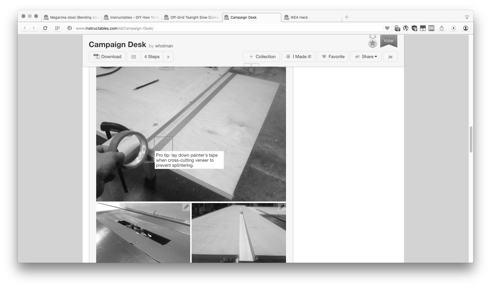
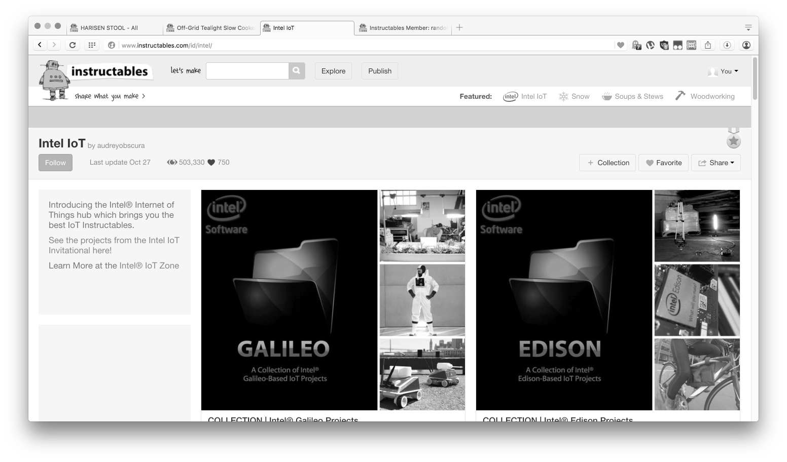

-

Hervorgehobene Artikel und Editoriale auf der Startseite von Instructables.
-

Die meisten Instructables Artikel sind Bauanleitungen für Objekte.
-

Interaktionsmöglichkeiten
Die Möglichkeiten als angemeldeter Nutzer mit Objekten und Autoren zu interagieren sind weitestgehend identisch zu denen von Thingiverse. Es gibt Sammlungen, Bilder von Umsetzungen, man kann die Objekte für später markieren, an andere schicken und dem Autor folgen.
-

Open Source Design
Der "Universal Nut Sheller" von "The Full Belly Project" ist ein Open Source Entwurf von Jock Brandis von 2003. Der Entwurf wurde drei Jahre später auf dem gerade erst entstandenen Instructables veröffentlicht.
-

Möbel aus Recyclingholz
Der Architekt Will Holman hat seit 2008 62 Entwürfe auf Instructables veröffentlicht. Sein Buch "Guerilla Furniture Design" enthält 54 dieser Entwürfe und ist 2015 beim Storey Publishing Verlag erschienen.
-

Eine Anleitung besteht aus Texten, nach Arbeitsschritten gegliedert...
-

... und aus Bildern mit Markierungen. Gegebenenfalls benötigte 3D-Dateien, Grafiken oder Code können als einzelne Dateien angehängt werden.
Der ganze Artikel ist jeweils auch als PDF veröffentlicht.
-

Geschäftsmodell:
Instructables wird durch Sponsoring finanziert. Man veranstaltet Schreib- und Bau-Wettbewerbe und schließt Partnerschaften, wie hier abgebildet mit der Halbleiterfirma Intel.